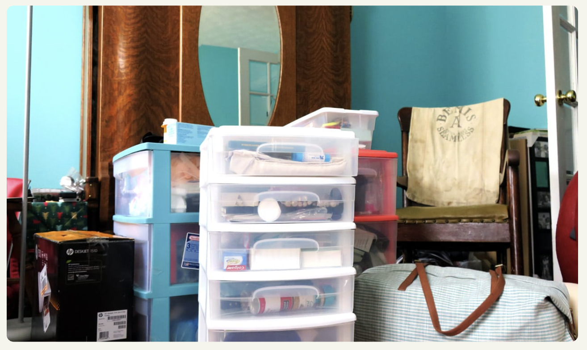
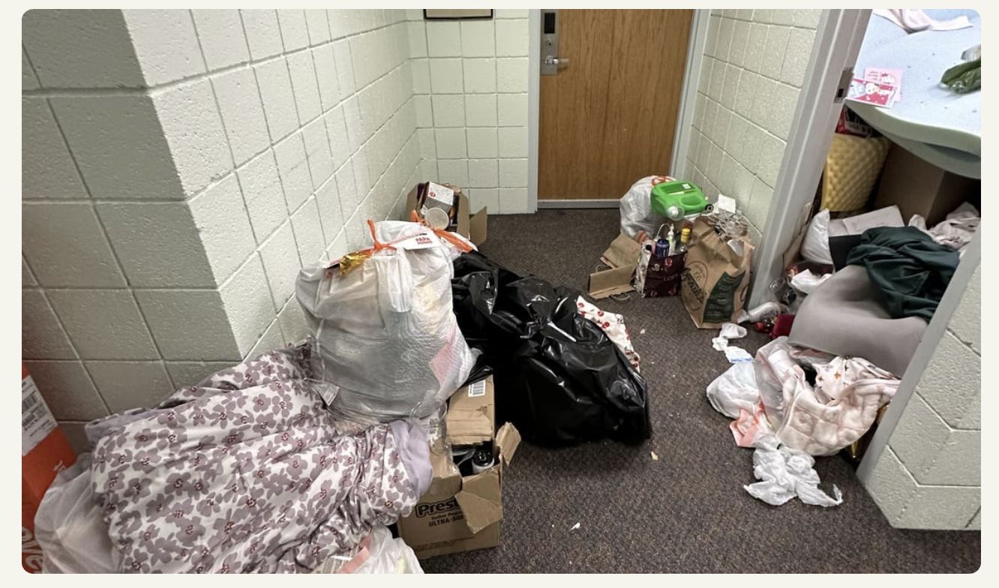
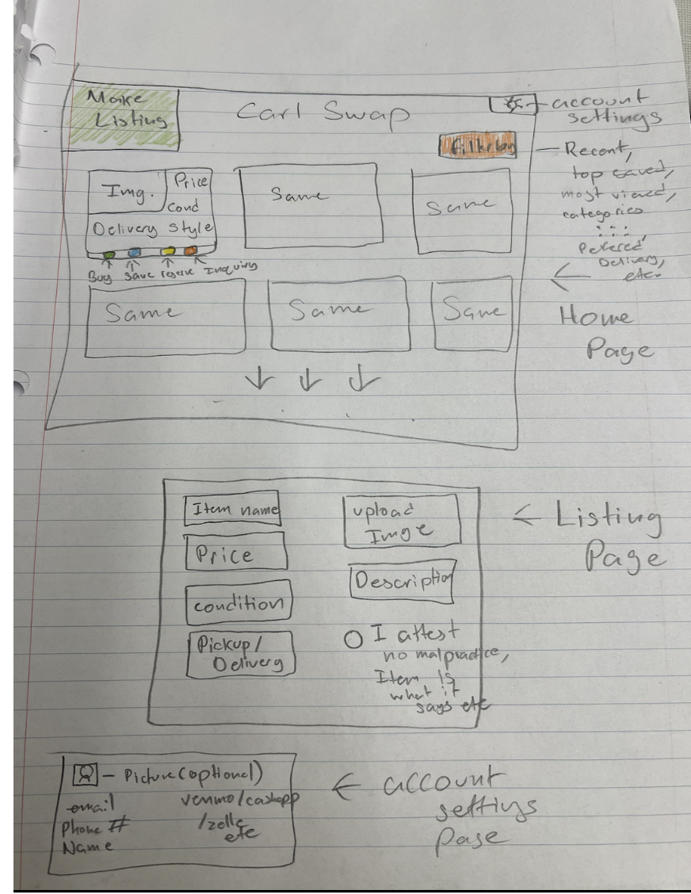
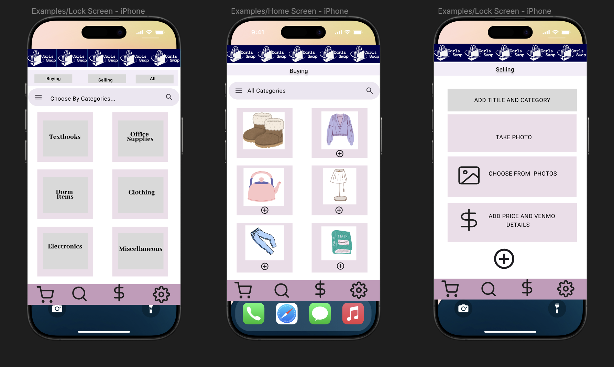
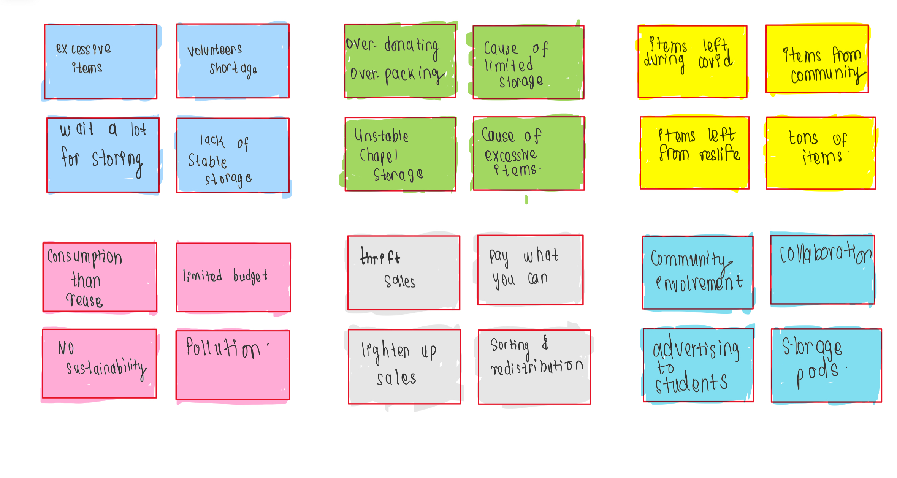
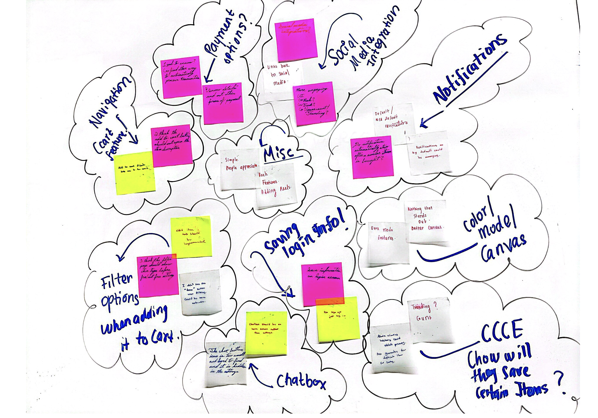

I am a junior majoring in Computer Science and Statistics at Carleton College. I am passionate about leveraging technology to create a meaningful impact in society. I am actively seeking internship opportunities in software development, particularly in full-stack development, machine learning, or sustainability-focused technology solutions.
Web Development
Artificial Intelligence
Software Development
Machine Learning
What do I do?
Here are some of my expertise
Innovative Ideas
I love finding creative solutions to challenging problems. By thinking differently and using the latest technologies, I aim to develop practical and effective solutions.
User experience
For me, great software means it's easy to use. I focus on making intuitive and user-friendly designs that help people achieve their goals effortlessly.
Application
I'm passionate about creating software that solves real-world problems. From idea to deployment, I ensure the solutions are practical, scalable, and impactful.
Graphic Design
Good design really matters. I work on creating interfaces that not only look great but also make the user's experience smoother and more engaging.
Data Analysis
Data helps me make better decisions. I enjoy working with complex datasets to find insights and create solutions that improve performance and solve problems.
Software Engineering
Software shoule be reliable. By following best practices and writing clean code, I focus on creating secure and scalable systems that work well now and in the future.
Cups of coffee
Projects
Clients
Partners
My Specialty
My Skills
Through a series of diverse roles, including as a HeadStarter AI SWE Fellow, DevSquad Junior Developer, and Machine Learning Research Assistant, I have honed my software engineering and machine learning skills. At HeadStarter, I built AI projects and engaged in hackathons, receiving mentorship that enhanced my coding abilities and interview readiness. My experience at DevSquad involved replacing costly chatbot solutions with open-source models, integrating APIs, and optimizing data processing for a better user experience. As a Machine Learning Research Assistant, I developed advanced video analysis techniques and behavioral classifiers, gaining expertise in MatLab and statistical validation methods. Additionally, my role as a Junior Software Developer allowed me to create VR simulations and Unity projects, further strengthening my proficiency in software development, problem-solving, and real-time application optimization.
Participated in the Headstarter Summer Fellowship, a 7-week program focused on building AI projects, engaging in hackathons, and gaining practical software engineering skills.
Contributed to projects, received mentorship and feedback from industry professionals, and demonstrated enhanced coding abilities and interview readiness.
Utilizing advanced video analysis and machine learning techniques in MatLab to track and classify grooming behavior in fruit flies.
Developing and validating behavioral classifiers, conducting cross-validation, generating ROC curves and confusion matrices, to identify key features to support research into neural circuit mechanisms regulating social behaviors.
Created and implemented Viking Age longship VR simulations featuring Hedeby Chest using Unity and C scripting.
Created a Unity project with a Blender-made Viking ship 3D model for a rowing mini-game, integrating mixed reality
elements for enhanced user engagement.
Team Members: Kritika Pandit, Owen Xu, Lucky Beulla Muhoza, Daniel Scheider
Project Overview:
Carls Swap is a project aimed at creating an efficient system for Carleton students to exchange items both during the school year and the end-of-year cleanup. Our platform will provide an interface for students to offer extra items they no longer need to others while also streamlining the process for the Center for Community and Civic Engagement (CCCE) to acquire and sell items collected during cleanup. Additionally, students will have the option to reserve high-value items acquired by CCCE, ensuring they remain available to the Carleton community rather than being sold to external buyers during breaks.


Phase I
After interviewing a participant using a fictional inquiry approach and allowing them to design the website, I developed this prototype. First, I created a Carls Swap logo to foster a sense of belonging for Carleton students, emphasizing that the platform is private and exclusively for Carleton users. The interviewee mentioned that they would prefer an app since they wouldn’t always have access to a computer. Additionally, they highlighted the importance of features such as buying and selling options, the ability to upload item photos, and the option to share Venmo details for transactions.
Paper Prototype from Fictional Inquiry:

Furthermore, they emphasized the need for item categories, filters for different types of items, and an option to reserve items by adding them to a cart. They also suggested having a search feature and creating user profiles. I incorporated intuitive buttons and thoughtful color combinations to make the app user-friendly and accessible to a diverse group of users. Based on key requirements identified through our research and analysis, I designed this low fidelity prototype. I utilized generative design methods, such as brainstorming and sketching on my iPad, to explore ideas that effectively address user problems through the app we are developing.
Low Fidelity Figma Prototype:

Phase II
Research & UX Process
Our research involved conducting semi-structured interviews and fictional inquiries with six Carleton community members, including CCCE workers and experienced students. During the interviews, participants sketched their ideal system, which significantly influenced our initial prototype.
Following the interviews, we performed axial coding to identify core themes emerging from the data, allowing us to pinpoint key insights that guided our app development. We then conducted an iterative design process, incorporating feedback from the students who are in the same class to refine and improve the prototype. View our Axial Coding process.

Prototype & Design Process
Building on research insights, I developed the low-fidelity Carls Swap prototype in Figma, prioritizing features that users identified as essential. After creating the prototype, we conducted usability testing with other students from our class and received valuable feedback:
The banner in the app was misleading.
Colors were too light, potentially making it difficult for color-blind users.
Item prices needed to be clearly displayed.
Reserved items should be temporarily hidden and relisted if not purchased within a few days.
Periodic app cleanup was necessary to remove listings from graduated students.
A messaging feature was essential for price negotiation and communication.
Users should be able to return items if unsatisfied, with consequences (such as bans) for misuse or inappropriate behavior.
Main App Requirements from Axial Coding Process
Exchanging items without storage: Students can coordinate meetups using the messaging feature to exchange items, eliminating the need for storage space.
Wishlist and notifications: Users receive notifications when an item they were looking for becomes available, saving them from constant manual searches.
Item tracking for CCCE inventory: Helps CCCE track and manage inventory, ensuring high-demand items are saved for New Student Week sales and not sold over the summer.
Based on the feedback, axial coding, and the collective insights from all four team members' interviews, I designed my mid-fidelity prototype:
The prototype includes a messaging feature that allows students to coordinate meetups for item exchanges, eliminating the need for storage space and facilitating negotiations. This feature also enables users to discuss prices, request discounts, or ask about item details. Additionally, the prototype incorporates a Wishlist and Notifications feature, allowing users to save items they’re interested in and receive alerts when those items become available. This minimizes the need for constant manual searching, saving time.
When a user adds an item to their cart, it is temporarily removed from public listings to prevent others from purchasing it. However, if the item is not purchased within two days, it is automatically relisted for sale. Once an item is purchased, the seller can delete the listing or update details such as price and availability. This process ensures real-time tracking of items and keeps the listings up to date. Additionally, there is a history section where previously sold items are tracked, allowing CCCE to monitor inventory. This system helps ensure that high-demand items are saved for New Student Week and not sold during the summer break.
The updated design includes more vibrant colors and removes the misleading banner, aligning with user feedback. The prototype now provides a more intuitive and accessible experience, addressing the concerns raised during usability testing.
Interaction Flows
1. Edit / Delete Items
Users can easily add items, upload images, set pricing, and categorize listings. Once an item is sold, they can delete it. Look at the Flow interaction to see how it works.
2. Wishlist
Your items section contains the items you want to buy. Items will be removed if not purchased within 2 days. Look at the Flow interaction to see how it works.
3. Notifications
Users receive notifications when new items are added that match their previous filters/searches which were not available at the moment. Look at the Flow interaction to see how it works.
4. Texting Feature
Students can communicate directly to arrange item exchanges, reducing storage reliance. Look at the Flow interaction to see how it works.
Phase III
UX Evaluation Tasks
In Phase 3 of this project, each team member conducted a UX evaluation using methods such as co-discovery, think-aloud, or other evaluation techniques. I conducted a Sticky Notes Evaluation, where I did the audio recording of the evaluation session 39 minutes long, with two users who were stakeholders who had experience with moving in and out process. The primary goal of this UX evaluation was to assess the usability of the mid-fidelity prototype designed during Phase II. The UX evaluation tasks included:
Task 1: Find and purchase an item:
Users were asked to browse items, view details (price, categories, pickup/delivery options), and add items to a wishlist or cart.
Task 2: Navigate to sell an item:
Users were tasked with selling an item they no longer need.
Task 3: Save an item that they like:
Users were prompted to save an item to their wishlist or cart.
Task 4: Navigating settings:
Users were asked to explore the notification settings and review all available options carefully.
UX Evaluation Process
The evaluation used a sticky note approach, where users collaborated, verbalized their thoughts, and wrote feedback on sticky notes during the session. Users interacted with a Figma prototype to simulate real-world app usage. Informal UX metrics, such as task completion times, error rates (e.g., misclicks), and user feedback, were documented to identify usability issues and areas for improvement.
Results from UX Evaluation
Feedback
1. Chat Feature Placement:
Users found the chat box unintuitive as it was hidden in the settings. One user noted, "I wouldn’t think to check settings for the chat box." Another suggested, "There should just be a button for the chat box directly on the page."
2. Transaction Issues:
Users expressed concerns about transaction tracking. One user suggested, "Maybe integrate Venmo so the app can record transactions and update item availability automatically."
Another user proposed, "Add a notification system where sellers confirm or deny sales, updating the app accordingly."
3. Notification Settings:
Users felt notifications should be opt-in rather than default. One user said, "If no results pop up, ask users if they want to be notified when the item becomes available."
Another added, "Make it easy to turn notifications on and off to avoid flooding notifications."
4. Design and Accessibility:
Users appreciated the simplicity but suggested improvements like dark mode. One user commented, "A lot of apps have dark mode, and users really appreciate it."
Some users felt the design was too plain, with one noting, "It seems like a blank canvas; nothing really stands out."
5. Social Media Integration:
Users were divided on adding social media features. One user said, "People won’t use this app for social media; it can’t compete with Instagram or TikTok."
Another suggested, "Maybe add a feed of trending items, similar to Pinterest, to make it more engaging."
6. Privacy Concerns:
Users were uncomfortable with the idea of third-party organizations accessing their transaction history. One user stated, "I wouldn’t want CCCE to see what I’m selling or buying; it feels like a violation of privacy."
Sticky Notes Board:

UX Metrics Collected:
Each member of the group collected UX Metrics using different methods like Co-Discovery, Sticky Notes, and Think-Aloud Protocols. By making different users try our prototypes, we collected the following UX metrics:
Task 1: Find and Purchase an Item
Average Time: 37.25 seconds
Average Clicking Error Rate: 6 (High)
Average Navigation Error Rate: 1 (Low)
Task 2: Navigate to Sell an Item
Average Time: 23.25 seconds
Average Clicking Error Rate: 1.75 (Low)
Average Navigation Error Rate: 0.5 (Low)
Task 3: Save an Item
Average Time: 50.5 seconds
Average Clicking Error Rate: 3 (Medium)
Average Navigation Error Rate: 2.5 (Medium)
Overall, the most common incidents and feedback for our prototypes were misclicking inactive buttons, issues with the text box, security and privacy concerns, as well as concerns with the payments.
To address user feedback, several improvements were made to the Figma prototype. A prominent chat button was added to the home screen for easier access, and an opt-in notification system was introduced with simple on/off toggles. A "Forgot Password" page was introduced to assist users in case they lose access to their accounts. A dark mode option was implemented on the main page to enhance accessibility, particularly for users with vision impairments or color blindness. Design enhancements included improved spacing, additional colors, and more prominent item images. A new sales tracking page was also introduced to help CCCE manage popular items by anonymously tracking the number of items sold in the past week, located in the "Total Sales" section of the settings.
Users can now create a wishlist for unavailable items and receive notifications when those items become available, without being notified about past searches. Additionally, the cart feature allows users to add items they like, with a two-day window to purchase before removal. The search function was improved by repositioning the search button at the top of the page, while the previous bottom search button was replaced with the chat button to enhance accessibility. The home screen was also updated to feature four key icons at the bottom—home, chat, cart, and profile. The cart directs users to their saved items, the chat opens a messaging text box, and the profile section confirms the user’s login status.
Future Steps
Based on user feedback, I want to make several future improvements for the Carls Swap app since I coulnd not address those due to lack of resources. First, I plan to integrate additional payment options, such as PayPal and Zelle, to accommodate users who cannot use Venmo. I also aim to develop an advanced notification system that distinguishes between one-time purchases, like textbooks, and recurring interests, such as thrifting. Privacy will be a priority, so I intend to encrypt user data and limit third-party access to transaction history.
I’m considering exploring social media integration through lightweight features, such as a trending items feed or Instagram story integration, to make the app more engaging. Additionally, I plan to conduct further accessibility testing to ensure the app meets the needs of users with disabilities. Finally, I’m thinking about cross-platform development to expand usability across different devices, including tablets and desktops, making the app more versatile and accessible to a wider audience.